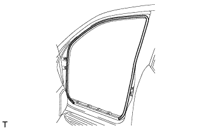
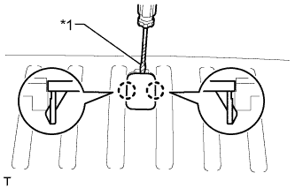
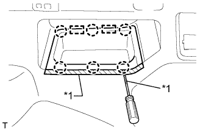

ДИНАМИК В НАРУЖНОЙ ОБЛИЦОВОЧНОЙ ПАНЕЛИ (для 3-дверных моделей) > СНЯТИЕ |
| 1. СНИМИТЕ ЗАДНЕЕ СИДЕНЬЕ № 1 В СБОРЕ |
для опускаемых сидений раздельного типа 60/40 с левой стороны:
Снимите заднее сиденье № 1 в сборе (Нажмите здесь).
для опускаемых сидений раздельного типа 60/40 с правой стороны:
Снимите заднее сиденье № 1 в сборе (Нажмите здесь).
| 2. СНИМИТЕ ОПОРНУЮ НАКЛАДКУ ЛЕВОЙ ДВЕРИ В СБОРЕ |
 |
Наклейте защитную ленту вокруг опорной накладки двери.
С помощью отвертки освободите 4 фиксатора, 10 захватов и 2 направляющих и снимите опорную накладку двери.
| *1 | Защитная клейкая лента |
| 3. СНИМИТЕ УПЛОТНИТЕЛЬ ОБШИВКИ ПРОЕМА ЛЕВОЙ ПЕРЕДНЕЙ ДВЕРИ |
|  |
Снимите уплотнитель обшивки проема передней двери.
| 4. СНИМИТЕ ЗАДНЮЮ КРЫШКУ В СБОРЕ (для моделей с задней крышкой) |
Снимите заднюю крышку.
| 5. СНИМИТЕ НАКЛАДКУ КОМПЛЕКТА НАПОЛЬНЫХ КОВРИКОВ |
|  |
С помощью отвертки расцепите 2 захвата и снимите накладку установочной пластины коврика.
| *1 | Защитная клейкая лента |
| 6. СНИМИТЕ ЗАДНЮЮ ОПОРНУЮ ПЛАСТИНУ КОВРИКА ЗАДНЕГО ПОЛА |
 |
Выверните 5 винтов.
Освободите 6 захватов и снимите заднюю опорную пластину коврика заднего пола.
| 7. СНИМИТЕ КРЫШКУ ОТВЕРСТИЯ В ЛЕВОЙ ЗАДНЕЙ БОКОВОЙ ОБЛИЦОВОЧНОЙ НАКЛАДКЕ |
 |
Освободите 2 захвата и 2 направляющих и снимите крышку отверстия в задней боковой облицовочной панели.
| 8. СНИМИТЕ ЗАДНИЙ НАПОЛЬНЫЙ КОВРИК |
 |
Снимите задний напольный коврик.
| 9. СНИМИТЕ ЗАЩЕЛКУ ОБЛИЦОВКИ БАГАЖНОГО ОТДЕЛЕНИЯ № 1 |
 |
Снимите защелку облицовочной панели багажного отделения, повернув ее по часовой стрелке.
| 10. СНИМИТЕ КОЛПАЧОК КРЕПЛЕНИЯ ЗАДНЕЙ КРЫШКИ № 1 (для моделей без задней крышки) |
 |
С помощью отвертки освободите 2 захвата и снимите колпачок крепления задней крышки.
| *1 | Защитная клейкая лента |
| 11. СНИМИТЕ ПЕРЕДНЮЮ БОКОВУЮ ОБЛИЦОВОЧНУЮ НАКЛАДКУ БАГАЖНОГО ОТДЕЛЕНИЯ (для моделей с задней крышкой) |
 |
С помощью отвертки освободите 2 захвата и снимите переднюю боковую облицовочную накладку полки багажного отделения.
| *1 | Защитная клейкая лента |
| 12. СНИМИТЕ КАРМАН В ЗАДНЕЙ БОКОВОЙ ОБЛИЦОВКЕ |
|  |
Наклейте защитную ленту вокруг кармана в задней боковой облицовочной панели.
С помощью отвертки освободите 6 захватов и 2 направляющих и снимите карман в задней боковой облицовочной панели.
| *1 | Защитная клейкая лента |
| 13. СНИМИТЕ НАКЛАДКУ КРЕПЛЕНИЯ ПОЯСНОГО РЕМНЯ БЕЗОПАСНОСТИ |
 |
Освободите 3 захвата и снимите накладку крепления поясного ремня безопасности.
| 14. СНИМИТЕ ЛЕВУЮ БОКОВУЮ ОБЛИЦОВОЧНУЮ ПАНЕЛЬ ПОЛКИ БАГАЖНОГО ОТДЕЛЕНИЯ В СБОРЕ |
 |
Выверните болт и отсоедините напольное крепление ремня безопасности переднего сиденья.
 |
Выверните болт и отсоедините напольное крепление ремня безопасности заднего сиденья № 1.
Выверните 3 болта и 2 винта.
Освободите 9 захватов и 12 фиксаторов и снимите боковую облицовочную панель полки багажного отделения.

| 15. СНИМИТЕ ЗАДНИЙ ДИНАМИК |
Отсоедините разъем динамика.
Выверните 3 винта.
Освободите 2 захвата и снимите задний динамик.
| 16. СНИМИТЕ КРОНШТЕЙН ДИНАМИКА № 2 |
Снимите зажим.
Выверните 3 болта и снимите кронштейн динамика № 2.